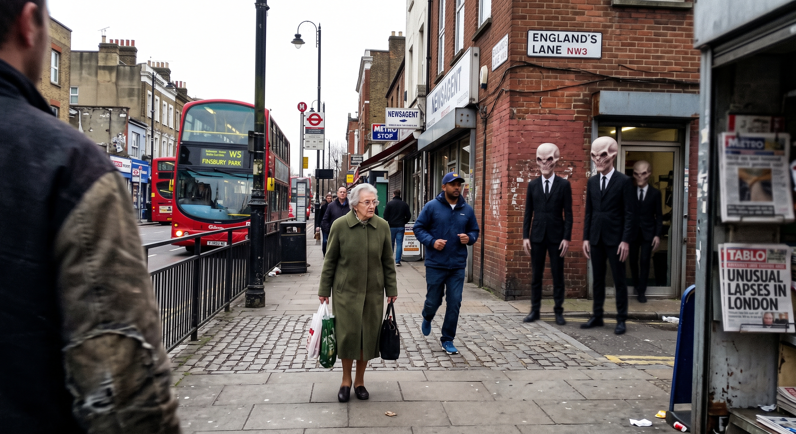

Testemunhas esquecem encontro com figuras de terno segundos após vê-las
Fotografias mostram indivíduos desconhecidos em diferentes pontos de Londres. Nenhuma das pessoas presentes nas imagens se lembra de tê-los visto.

Uma série de fotografias encontradas em celulares, câmeras de segurança e arquivos pessoais mostra figuras altas vestidas com ternos escuros em diferentes regiões de Londres. O problema é que ninguém parece se lembrar delas.
Algumas testemunhas reconhecem as figuras enquanto observam as imagens. Segundos depois de desviar o olhar, porém, afirmam não saber o que estavam procurando. Em vários casos, foi necessário mostrar a mesma fotografia repetidas vezes durante uma única entrevista.
Entrevistas terminam sem respostas
A reportagem tentou conversar com seis pessoas que aparecem próximas às figuras nos registros. Nenhuma conseguiu concluir seu relato. Uma testemunha descreveu um homem alto de terno por quase um minuto antes de interromper a própria frase e perguntar por que estava sendo entrevistada.
Outra mulher encontrou no próprio celular uma sequência de fotografias da mesma figura. Após observar as imagens, afirmou estar assustada. Quando guardou o aparelho, perguntou à equipe por que estavam falando sobre suas fotografias.
“Ele estava bem na minha frente. Era alto, tinha um rosto muito... desculpa, do que estávamos falando mesmo?” — testemunha entrevistada pela reportagem
A própria origem desta investigação permanece confusa. A redação encontrou anotações sobre o caso acompanhadas da frase "NÃO DESVIE O OLHAR", mas nenhum jornalista se recorda de tê-las escrito. Fotografias utilizadas nesta matéria também precisaram ser conferidas diversas vezes durante a edição.